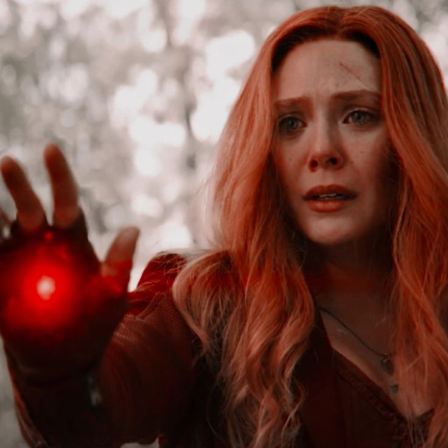
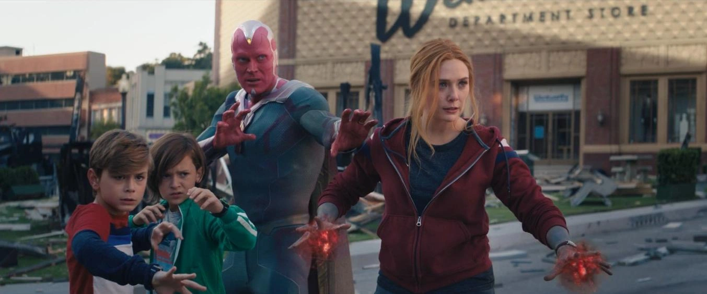
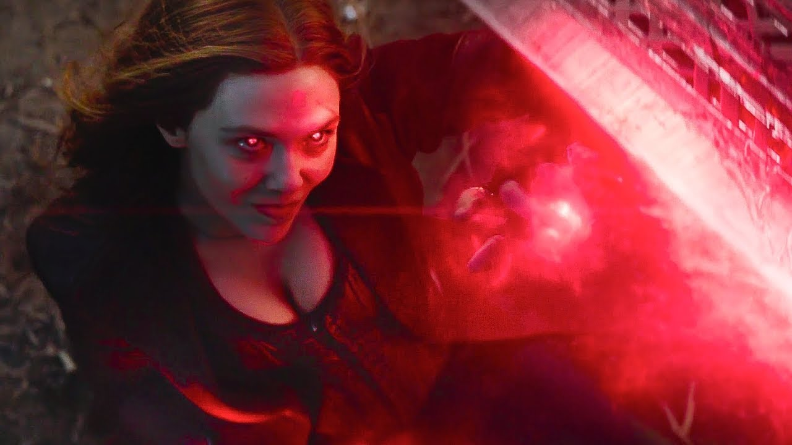
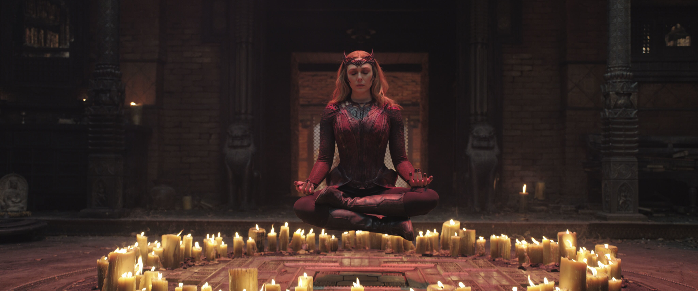

Misiones
Intervenciones clave donde Wanda Maximoff ha alterado el curso del universo mediante la Magia del Caos.
Defensa de Westview
Descripción: Creación y mantenimiento de una realidad alternativa completa.
Tecnologías: Magia del Caos, Manipulación mental, Control de realidad
Detalles ampliados: Wanda creó una burbuja hexagonal capaz de reescribir la realidad, alterar recuerdos y modificar la estructura molecular del entorno. Proyecto clasificado como amenaza nivel Omega.

Batalla contra Thanos
Descripción: Enfrentamiento directo con una entidad cósmica de nivel Titán.
Tecnologías: Telequinesis avanzada, Energía mística pura
Detalles ampliados: Durante la batalla, Wanda mostró la capacidad de desarmar momentáneamente a Thanos, mantener un enfrentamiento directo con un Titán y canalizar energía mística capaz de causar daño masivo. Nivel de amenaza: muy alto.

Dominio del Darkhold
Descripción: Estudio y dominio del libro ancestral de magia prohibida.
Tecnologías: Hechicería ancestral, Manipulación multiversal
Detalles ampliados: El Darkhold potencia la magia de Wanda, permitiéndole manipular la realidad más allá de Westview, interactuar con diferentes líneas temporales y universos paralelos. Riesgo de corrupción mental y proyecto clasificado como amenaza multiversal (Omega+).
